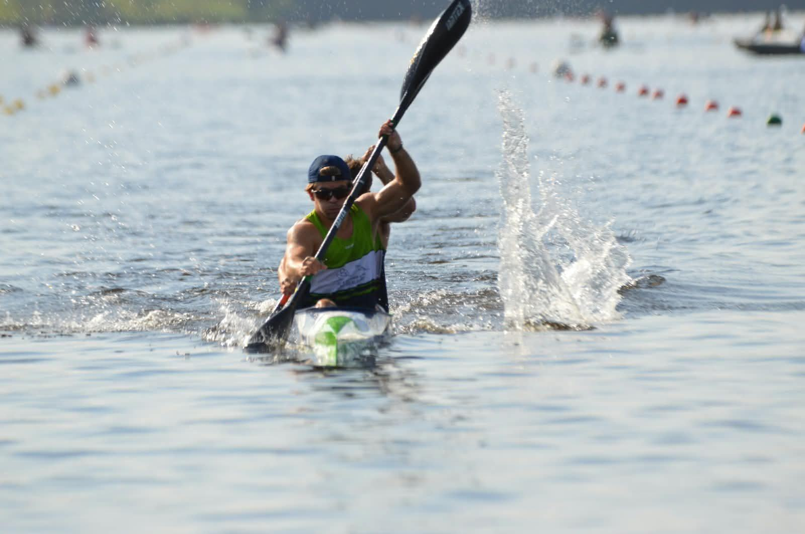
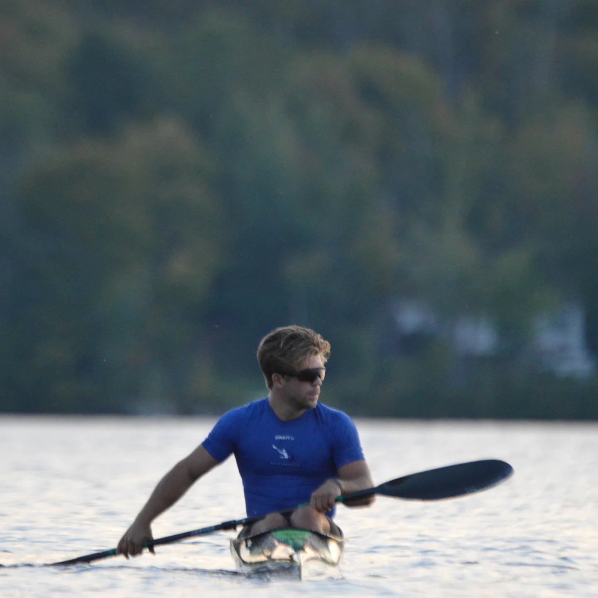
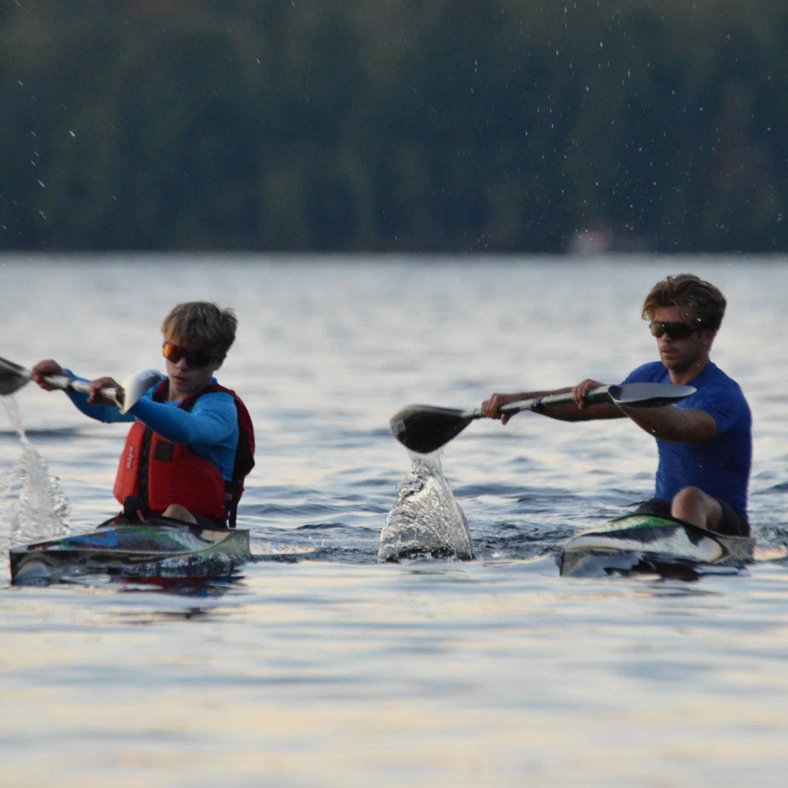

Accélérer dès le premier coup
Placement, engagement et impulsion : donner le ton de la course.

Kayak de vitesse · Athlète
Une ligne d’eau. Des repères. Une trajectoire : la tienne.

Kayakiste de vitesse
Le regard sur l’arrivée. La pagaie dans l’eau. À fond.
En kayak de vitesse, tout se joue dans l’équilibre entre puissance, technique et timing. Des premiers coups de pagaie au sprint final, chaque détail compte. Ici, je partage mes entraînements, mes compétitions et le chemin vers mes prochains objectifs.
Le parcours
Des départs explosifs, une cadence maîtrisée, un bateau qui file droit : le sprint se construit coup après coup.
Placement, engagement et impulsion : donner le ton de la course.
Garder une technique propre et une fréquence solide sur l’eau.
Rester puissant·e et lucide dans les derniers mètres.
Renseigne tes distances, chronos et résultats de compétition.
Saison 2026 · 12 juin — 29 août
Julien Pomerleau · Club de canoë-kayak Lac-Beauport. Une saison de 23 courses sur les scènes nationale et provinciale, documentée à partir des procès-verbaux officiels.
Finale Senior Men — équipage Lac-Beauport
Victoire en équipage de 15 pagayeurs, avec 0,552 s d’avance sur Maskwa.
| Date | Épreuve · phase | Place | Temps |
|---|---|---|---|
| 29 août | K4 500 m · Série H1 — Nationaux | 2e | 1:30.615 |
| 29 août | K4 200 m · Série H3 — Nationaux | 2e | 33.885 |
| 26 août | K2 200 m · Série H4 — Nationaux | 3e | 37.666 |
| 25 août | K1 500 m · Série H4 — Nationaux | 4e | 1:58.964 |
| 14 juin | K1 5 km · Finale A — Essais nationaux | 18e/26 | 25:46.47 |
| Date | Épreuve · compétition | Place | Temps |
|---|---|---|---|
| 12 juin | K1 1000 m · Essais nationaux, série H5 | 6e/7 | 4:04.24 |
| 12 juin | K2 500 m · Essais nationaux, série H2 | 6e | 1:44.02 |
| 13 juin | K1 500 m · Essais nationaux, série H2 | 8e/9 | 1:55.04 |
| 13 juin | K2 500 m · Essais nationaux, demi-finale | 6e | 1:44.70 |
| 14 juin | K1 5 km · Essais nationaux, finale A | 18e/26 | 25:46.47 |
| 7 août | K1 200 m · Provinciaux, éliminatoire 1 | 8e/9 | 39.95 |
| 7 août | K1 1000 m · Provinciaux, éliminatoire 2 | 6e/8 | 3:54.28 |
| 8 août | K1 500 m · Provinciaux, éliminatoire 2 | 6e/8 | 1:48.76 |
| 8 août | K2 200 m · Provinciaux, éliminatoire 2 | 4e/7 | 36.46 |
| 8 août | K2 1000 m · Provinciaux, finale 1 | 6e/8 | 3:34.94 |
| 8 août | K4 200 m · Provinciaux, finale 1 | 4e/8 | 33.70 |
| 8 août | K2 200 m · Provinciaux, finale 1 | 8e/9 | 36.64 |
| 9 août | K4 500 m · Provinciaux, finale 1 | Non indiqué | Non indiqué |
| 25 août | K1 500 m · Nationaux, série H4 | 4e | 1:58.964 |
| 26 août | K2 200 m · Nationaux, série H4 | 3e | 37.666 |
| 26 août | K1 1000 m · Nationaux, série H2 | 6e | 3:59.298 |
| 27 août | K2 1000 m · Nationaux, série H1 | 4e | 3:34.841 |
| 27 août | C15 500 m mixte · Nationaux, finale | 4e | 1:57.679 |
| 29 août | K4 500 m · Nationaux, série H1 | 2e | 1:30.615 |
| 29 août | K4 200 m · Nationaux, série H3 | 2e | 33.885 |
| 29 août | K4 500 m · Nationaux, finale A | 6e | 1:28.676 |
| 29 août | K4 200 m · Nationaux, finale A | 9e | 34.086 |
| 29 août | C15 1000 m · Nationaux, finale | 1er | 3:45.126 |
Données transcrites du rapport 2026 fourni. Les places des séries et éliminatoires sont des rangs de course, pas des médailles. Résultat absent au procès-verbal : « Non indiqué ».
Au quotidien
Des séances sur le bassin à l’intensité du départ : la vie d’un kayakiste de vitesse, coup de pagaie après coup de pagaie.



Kayak de vitesse · Stages invités
J’aime partager l’expérience du haut niveau et aider chaque kayakiste à trouver ses repères. Invité·e sur un stage ou un camp, je peux échanger autour de la technique, du départ, du rythme de course et de la préparation.
M’inviter sur un camp →Position, prise d’eau et relâchement à adapter à chaque athlète.
Travailler les accélérations, les relances et la tenue du rythme.
Retour d’expérience, objectifs et questions-réponses avec le groupe.
Disponibilités, lieux et formats de camp à discuter.
L’athlète, mais aussi la personne
La performance ne se construit pas seulement sur l’eau. La curiosité, la constance et le plaisir de progresser font aussi partie du voyage. Cette section est à toi : raconte ce qui te motive, tes études ou ton travail, tes passions et les personnes qui t’inspirent.
Esprit d’équipe, détermination, respect.
Ajoute ici tes passions, tes études ou ton quotidien.
Le plaisir de me dépasser et de partager l’aventure.
Aller plus loin, ensemble
Derrière chaque départ, il y a une équipe. Merci à Fondation Ascension pour son soutien à mon parcours de kayakiste de vitesse.
Devenir partenaire →Mes partenaires actuels

Engagement · Confiance · Ambition
On en parle ?
Partenariat, compétition, presse ou projet autour du kayak de vitesse ? Écris-moi, je serai ravi·e d’échanger.
contact@votre-domaine.fr →